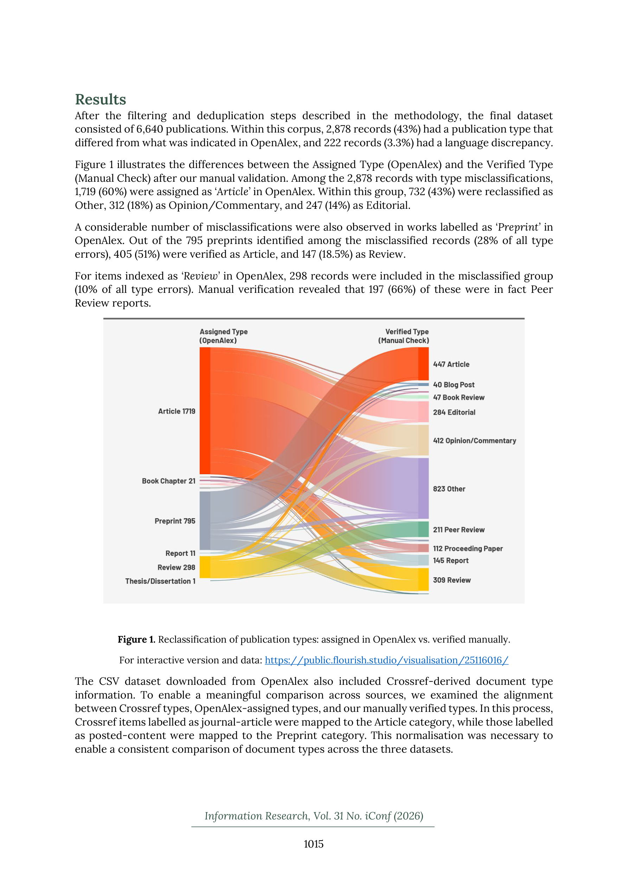

핵심 요약
본 연구는 OpenAlex 데이터베이스의 메타데이터 품질을 출판물 유형(publication type)과 언어(language) 필드를 중심으로 평가한다. Open peer review 관련 6,640건의 레코드를 수동 검증한 결과, 43%(2,878건)에서 출판물 유형 불일치가, 3.3%(222건)에서 언어 불일치가 발견되었으며, 'Article'이 가장 빈번하게 오분류된 유형이었다.

Figure 2
저자: Güleda Dogan, Ayca Nur Sezen | 날짜: 2026-03-20 | DOI: 10.47989/ir31iconf64207

Figure 1
본 연구는 OpenAlex 데이터베이스의 메타데이터 품질을 출판물 유형(publication type)과 언어(language) 필드를 중심으로 평가한다. Open peer review 관련 6,640건의 레코드를 수동 검증한 결과, 43%(2,878건)에서 출판물 유형 불일치가, 3.3%(222건)에서 언어 불일치가 발견되었으며, 'Article'이 가장 빈번하게 오분류된 유형이었다.
Figure 2
OpenAlex는 Microsoft Academic Graph의 후속으로 2022년에 출범한 무료 학술 데이터베이스로, 광범위한 커버리지와 개방성으로 bibliometric 연구에 널리 활용되고 있다. 그러나 기관 소속 누락, OA 상태 불일치, 철회 논문 오분류 등 메타데이터 한계가 보고되어 왔다. 문서 유형과 언어는 체계적 리뷰와 bibliometric 분석의 필터링/적격 기준에 직접 영향을 미치므로, 이 필드들의 정확성 검증이 필수적이다.
OpenAlex의 출판물 유형 및 언어 메타데이터의 정확성을 대규모(6,640건) 수동 검증으로 실증적으로 평가한 연구이다. 43%라는 높은 유형 오분류율은 OpenAlex 기반 연구에서 체계적 전처리와 검증의 필수성을 강력히 시사하며, 세분화된 분류 체계를 제안한 점도 실용적 기여이다.
총평: OpenAlex 메타데이터의 실질적 품질 문제를 정량적으로 드러낸 실용적 연구로, 해당 데이터베이스를 활용하는 모든 연구자에게 중요한 경고와 지침을 제공한다.